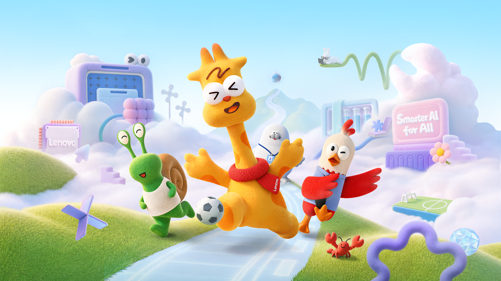
Campaign Design
Campus Recruitment
联想2027校园招聘
视觉设计
01 设计主题
Slogan
“联想你的未来”
承接人工智能技术浪潮，传递联想"混合式AI"的技术转型形象
延续校招IP资产，展现人才在联想开创未来的无限可能
策略层
- IP矩阵叙事
- 招聘IP联动各业务线IP形象，用群像替代单一角色
- AI元素融入校招视觉
- 用联想产品搭建可进入的世界，
角色由远及近走来，营造校招邀请感 - 建立差异化风格
- 用年轻化、明快的视觉语言，区别于传统科技企业的严肃调性
02 创意过程
创意提出
基于上文提到的视觉策略，分别从不同方向进行视觉主题的发散，
通过AI工具直接生成最终效果图
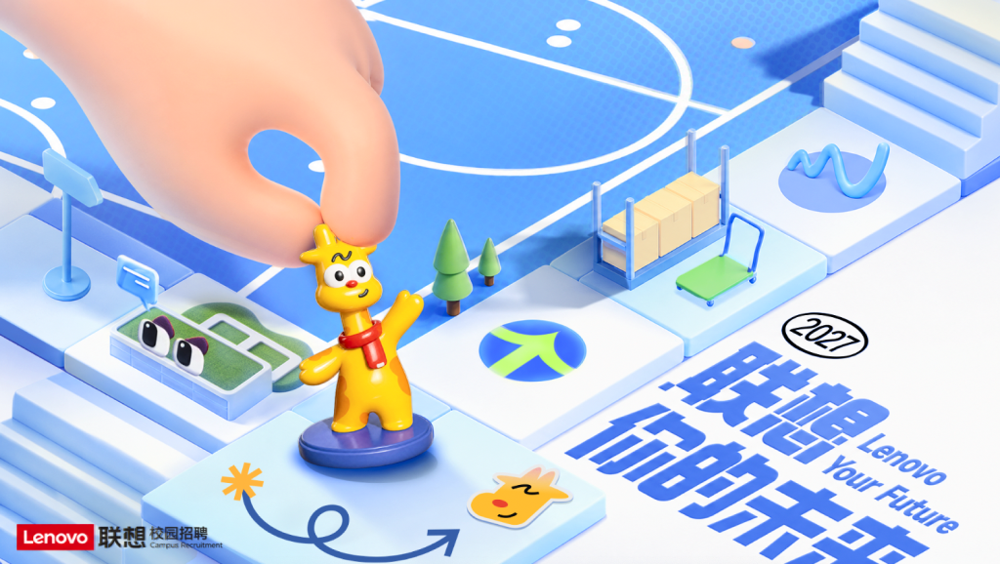
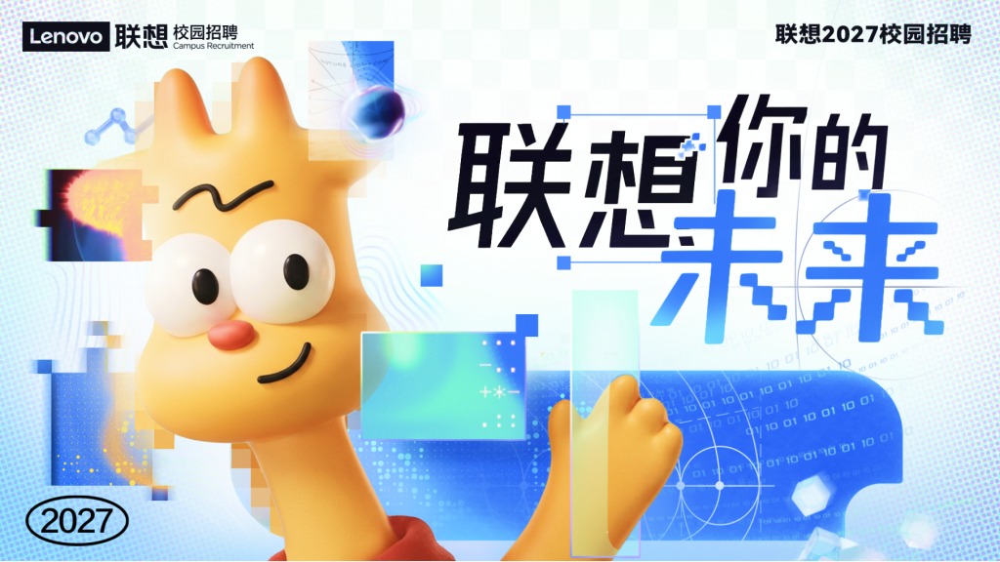
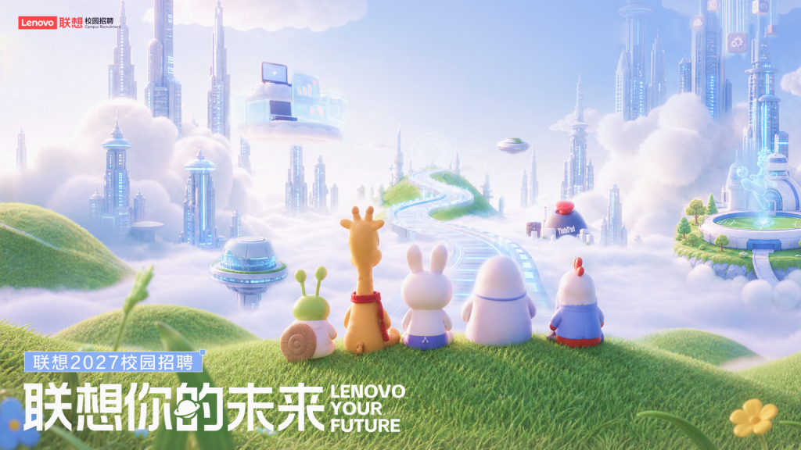
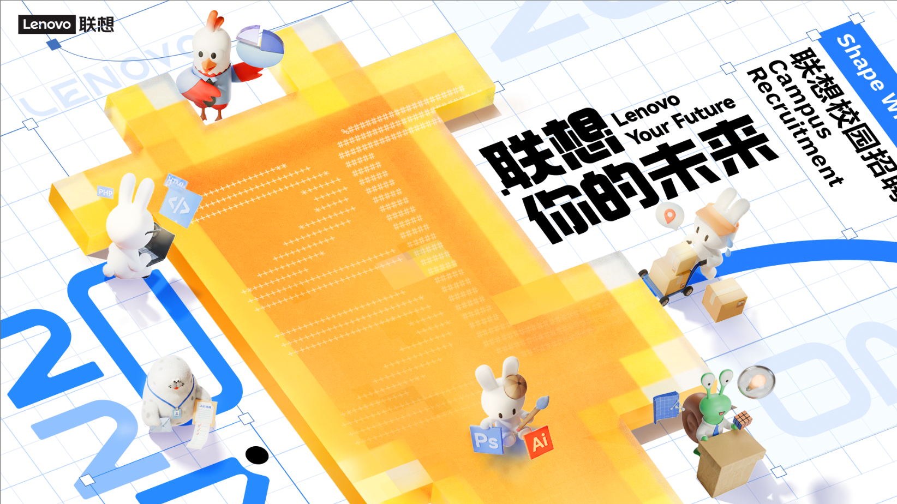
选定方向
在初版创意概念中，选择了以未来城市为核心的场景化设计
此构图优势在于，与slogan概念更契合，同时场景建筑能够自然地转换融入联想相关产品
核心概念
未来城市+联想产品线
AI元素自然融入场景
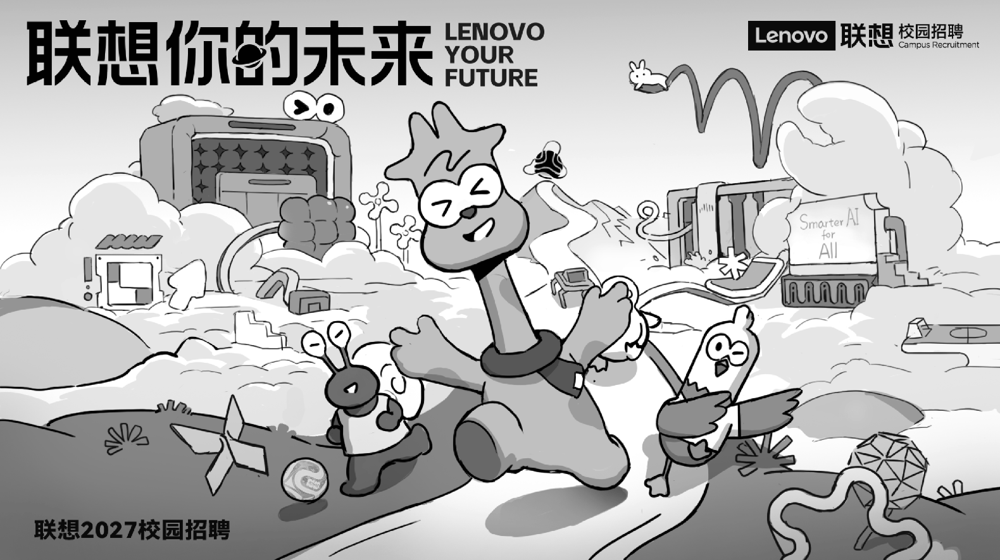
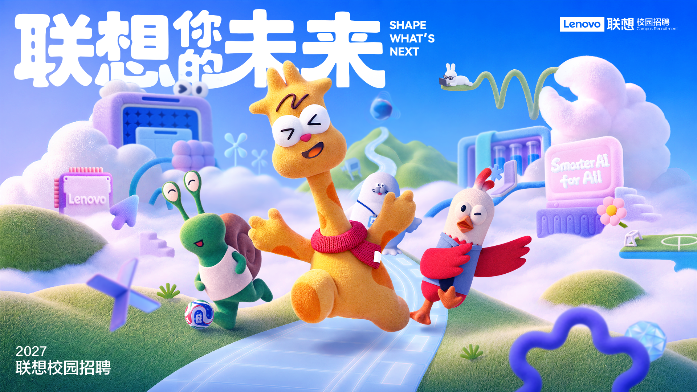
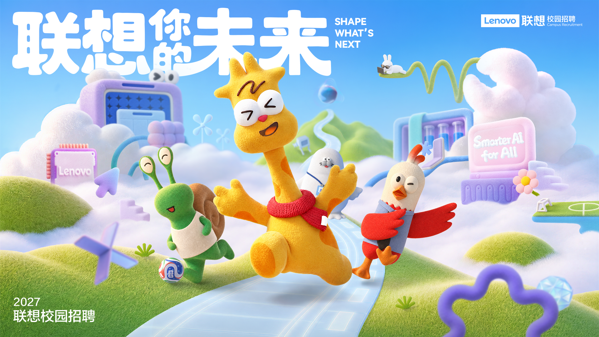
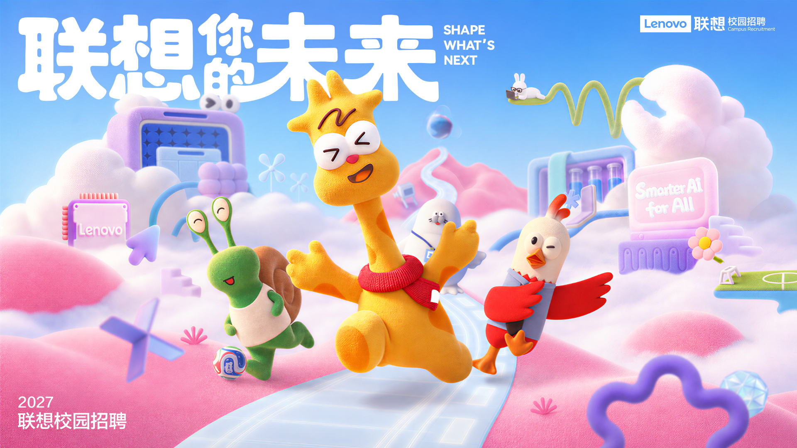
联想业务元素
- Think Station
- 智能终端
- 水冷技术
- 可持续发展策略
- 天禧ai算力球
03 KV制作
-
确定草图
确定大致氛围 为ai生成做准备
-
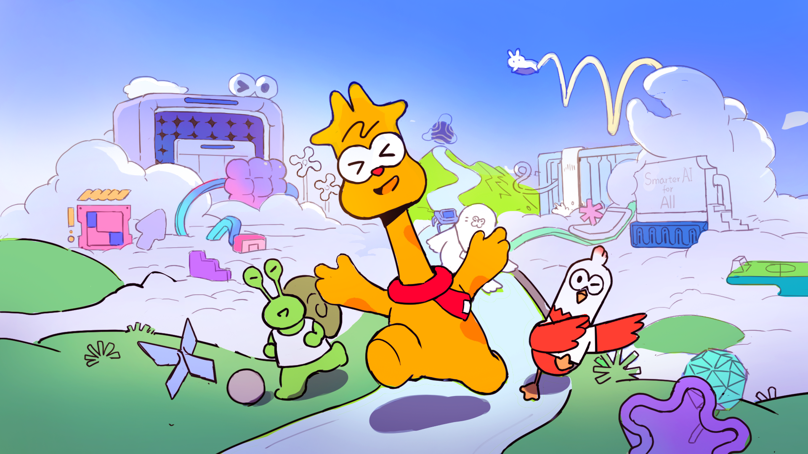
手绘上色
圈定色彩大致范围，
为ai生成做准备
-
确定大致效果
分别单独生成各个部件
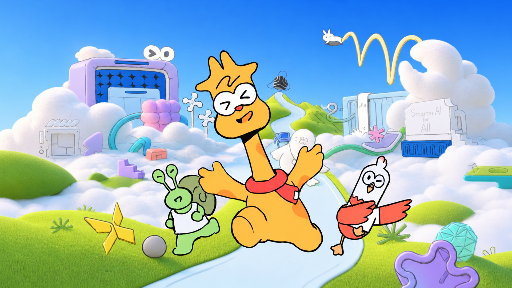
-
分层生成
分别单独生成各个部件
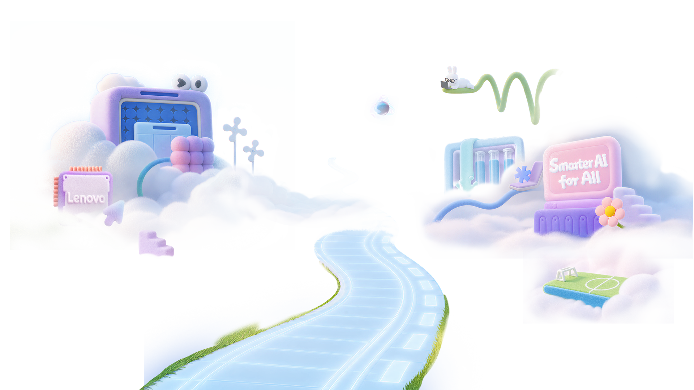
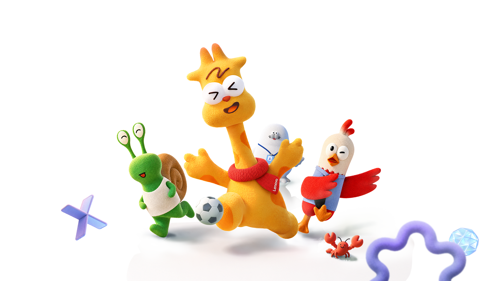